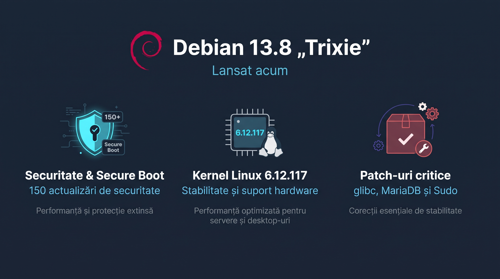

Debian 13.8 „Trixie” a fost lansat: 150 de actualizări de securitate, remediere Secure Boot, kernel 6.12.117 și patch-uri critice pentru glibc, MariaDB și Sudo

Proiectul Debian a anunțat disponibilitatea versiunii Debian 13.8, a opta actualizare de mentenanță (point release) a seriei stabile Debian 13 „Trixie”. Ediția integrează 150 de patch-uri de securitate și 122 de remedieri de erori, acoperind componente esențiale ale sistemului precum nucleul Linux, glibc, GRUB, microcodul Intel, dar și servicii critice de rețea și baze de date.
1. Nucleul sistemului, Secure Boot și glibc
Vulnerabilități de memorie și Secure Boot: Remediază multiple vulnerabilități de tip use-after-free (care puteau provoca blocări de tip denial-of-service) și o vulnerabilitate de ocolire a mecanismului Secure Boot identificată ca CVE-2026-97876.
Actualizări majore în
glibc: Rezolvă numeroase probleme de securitate (depășiri de buffer, scrieri în afara limitelor, stack overflows și erori de concurență), elimină blocajele aplicațiilor în timpul conversiilor UTF-32 și îmbunătățește detecția funcțiilor CPU pe procesoarele Intel.Kernel Linux și microcod Intel: Programul de instalare Debian (Debian installer) a fost reconstruit cu noua interfață ABI a nucleului Linux 6.12.117+deb13, iar pachetul de microcod Intel primește o nouă versiune upstream cu remedieri pentru vulnerabilități la nivel de procesor.
Desktop (KDE KWin): Managerul de ferestre KWin din KDE primește corecții pentru gestionarea culorilor pe Wayland și elimină crash-urile care apăreau la deconectarea monitoarelor.
2. Servicii de infrastructură, baze de date și rețelistică
MariaDB (versiune stabilă nouă): Include o versiune upstream actualizată care remediază vulnerabilități critice de execuție de cod, ocolire a autorizării, path traversal și injecție SQL, alături de erori de colationare și crash-uri.
Rsync, Sudo, OpenSSL și ClamAV: Rsync primește un patch pentru o vulnerabilitate de epuizare neautentificată a resurselor, Sudo remediază o problemă de securitate legată de manipularea variabilei de mediu
TZ, iar OpenSSL și ClamAV sunt actualizate la cele mai recente ediții stabile.Rețelistică și Cloud: Ruterele software BIRD 2 și BIRD 3 primesc corecții pentru calculul timerelor BGP, gestionarea cheilor de autentificare și validarea FlowSpec; alte pachete actualizate includ ModSecurity, ProFTPD, SSSD și componente OpenStack.
Actualizări cumulative de aplicații: Sunt integrate toate actualizările de securitate publicate anterior pentru Firefox ESR, Chromium, LibreOffice, Nginx, PHP 8.4 și Flatpak.
3. Actualizare și imagini ISO disponibile
Upgrade pentru sistemele existente: Utilizatorii care rulează deja Debian 13 pot prelua toate pachetele noi prin comenzile standard:
Bashsudo apt update && sudo apt full-upgradeImagini ISO pentru instalări noi:
Imagini
netinst: Disponibile pentru 6 arhitecturi (amd64,arm64,armhf,ppc64el,riscv64șis390x), ideale pentru servere sau instalări personalizate.Imagini Live: Disponibile exclusiv pentru arhitectura AMD64, cu medii desktop preinstalate (GNOME, KDE, LXDE, Xfce, Cinnamon și MATE).